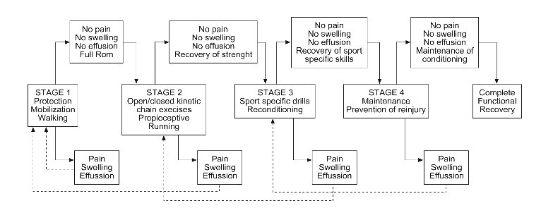

Det her er Rehab Paradis. En hjemmeside for dig der har slået dig lidt. Det er nok mest en stor genoptræningsguide. Siden bygger på metoderne PEACE og LOVE (ikke RICEM)
| Protect - Aflast eller begræns bevægelse i 1-3 dage | Load - En aktiv tilgang der bygger på bevægelse |
| Elevate - Løft den skadede kropsdel over hjertehøjde, for at øge blodgennemstrømningen | Optimism - Ens mentalitet spiller også en rolle i rehabiliteringen |
| Avoid - Undgå antiinflamatorisk medicin, da det kan hæmme helingen af vævet | Vascularisation - Cardiotræning for at øge motivation og blodgennemstrømning |
| Compress - Tape eller brug kompresbind for at sænke hævelsen | Exercise - Træn for at undgå at blive skadet igen |
| Educate - Uddan den skadede i hvordan man bedst kommer sig over den aktuelle skade og håndterer skader generelt. |
Hvert led/område er delt op i fire faser, du kan bevæge dig mellem som du vil, men det anbefales at du mærker efter og følger denne guideline.
Overhovedet ikke, hverken læge eller fysioterapeut. Så hvorfor skulle du følge en side der hedder noget så suspekt som Rehab Paradis? Det er gratis og det er et lille bibliotek af øvelser (men hvis du virkelig har slået dig, så tag til fys eller læge). Siden er lavet til mine efterskoleelever, der godt kan have lidt ondt her og der engang imellem. Så er det nemt bare at sende dem til Rehab Paradis og enten genoptræne eller styrketræne.
Hvis du synes det er helt ude i hampen det du ser her på siden, eller hvis du synes det faktisk er sejt nok, så er du velkommen til at sende en besked. Jeg laver det her efter bedste evne, men det er ikke altid en kvalitetsgaranti.
Mail: theproductivepickle@gmail.com